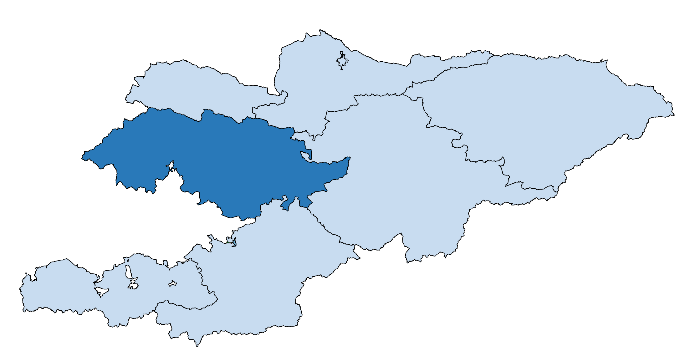

ДЖАЛАЛ-АБАД
Джалал-Абадская область расположена на юго-западе республики, на юге и юго-западе граничит
с Республикой Узбекистан, на севере – с Таласской областью, на востоке – с Нарынской областью,
на юго- востоке – с Ошской областью.
Общая площадь области составляет 33,7 тыс. кв. км, или около 17 процентов территории Кыргызской Республики.
Областной центр – г.Джалал-Абад.
В состав Джалал-Абадской области входят 8 районов, 8 городов (5 городов областного значения – Джалал-Абад,
Кара-Куль, Майлуу-Суу, Таш-Кумыр, Кок-Жангак,
3 города районного значения – Кербен, Кочкор-Ата, Токтогул), 4 поселка городского типа и 68 айылных аймаков.

Аксыйский район – г. Кербен (центр района)
Ала-Букинский район – с. Ала-Бука (центр района)
Базар-Коргонский район – с. Базар-Коргон (центр района)
Ноокенский район – с. Массы (центр района)
Сузакский район – с. Сузак (центр района)
Тогуз-Тороуский район – с. Казарман (центр района)
Токтогульский район – г. Токтогул (центр района)
Чаткальский район – с. Каныш-Кыя (центр района)
г.Джалал-Абад
г.Кара-Куль
г.Майлуу-Сай
г.Таш-Кумыр